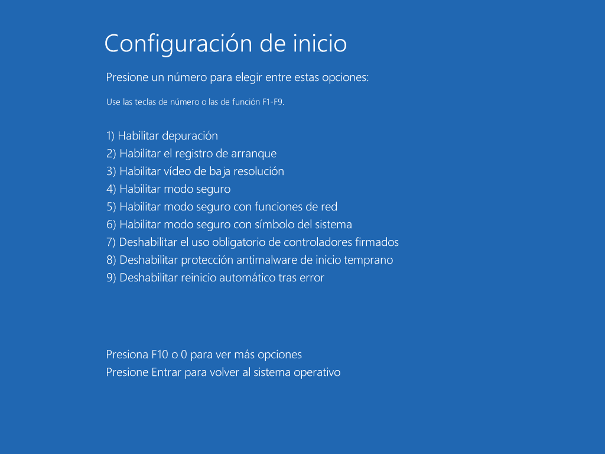
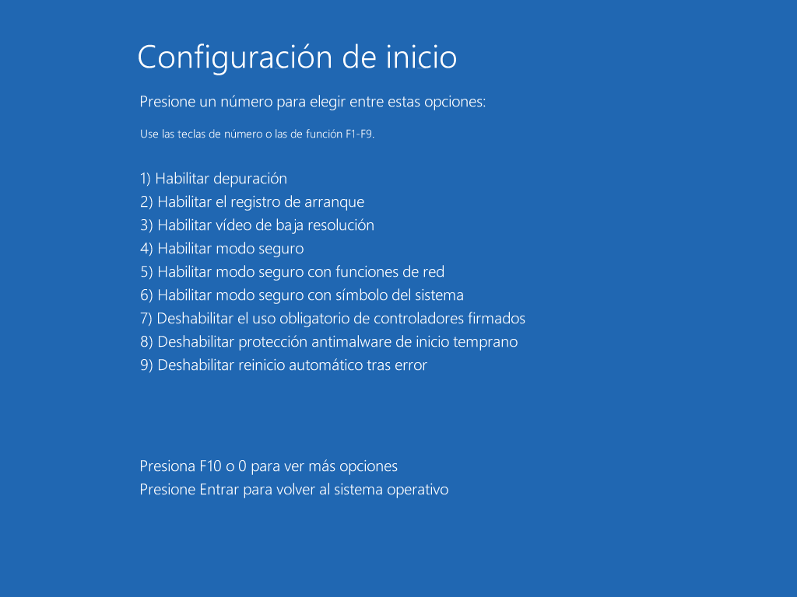

Información
Dolby Atmos es un Ecualizador de Sonido Envolvente que Mejora el Sonido de tu PC Haciendolo Mas Inmersivo y Personalizable, Cuenta con 4 Modos y 1 para tu Gusto.
- Dinamico.
- Pelicula.
- Musica.
- Juego.
- Voz.
- Personalizable.
Paso 1
Antes de Comenzar a Instalar el Dolby Atmos Tenemos que Activar el Modo Desarrolladores para Instalar el Driver, ya que no esta Firmado y sera Necesario para su Instalacion.
-
Activar Modo para Desarrolladores:
- Entrar a Configuracion.
- Ir a la Seccion de "Sistema".
- Ir a la Opcion de "Para Programadores".
- Activar "Modo para Desarrolladores".
 

Paso 2
Una vez Activado el Modo para Desarrolladores Tenemos que Entrar al Modo Seguro para Instalar el Controlador sin Errores.
-
Entrar al Modo Seguro:
- Reiniciar Manteniendo Shift Pulsado.
- Solucionador de Problemas.
- Opciones Avanzadas.
- Configuracion de Inicio.
- Reiniciar.
- F7: Deshabilitar el Uso de Controladores Firmados.
Paso 3
Ahora Estando Dentro del Modo Seguro Entraremos al Administrador de Dispositivos e Instalaremos el Controlador. En Caso que No te Guste el Dolby Atmos y Quieras Regresar a tu Antiguo Controlador Puedes Hacerlo desde aqui Mismo.
-
Instalar Driver:
- Abrir Administrador de Dispositivos.
- Controladoras de Sonido y Video y Dispositivo de Juego.
- Click Derecho en Driver de Sonido.
- Actualizar Controlador.
- Examinar mi PC en Busca de Controladores.
- Elegir en una Lista de Controladores Disponibles en el Equipo.
- Usar Disco.
- Click en Examinar y Buscar en "Dolby Driver" el "hdaudio.inf".
- Aceptar Todas las Advertencias.
- Instalar este Software de Controlador de Todas Formas.
Paso 4
Una Vez Instalado el Controlador Necesitamos ya Solo la Aplicacion para Controlar el Ecualizador a tu Gusto.
-
Instalar Dolby Atmos APP:
- Entrar a la Carpeta "Dolby APP" e Instalar "Dolby Atmos APP".
- Reiniciar Para Aplicar Cambios y Salir de Modo Seguro.